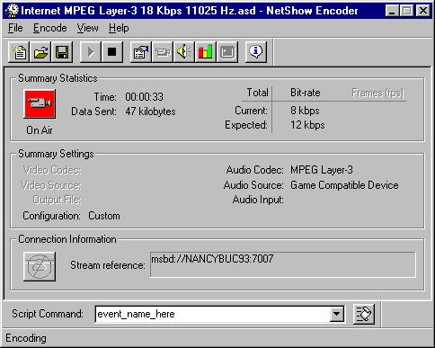

|
| ||
|
| ||
May 22, 1998
First, set up your encoding session by following the Windows Media Encoder wizards through. Once encoding has started, under Script Commands, enter the desired script command, and push the (send) button.

Once the script events are received by the client, they are interpreted by the VBScript or JavaScript in the HTML page that contains the Windows Media Player control. See the Downloads area for more information and samples.
Did you find this material useful? Gripes? Compliments? Suggestions for other articles? Write us!
© 1999 Microsoft Corporation. All rights reserved. Terms of use.